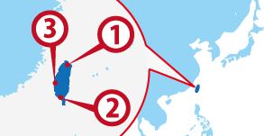

Tapei
Tapei Kaohsiung
Kaohsiung Taichung
Taichung
ワーホリ協定国一覧へ戻る

台湾人気都市 BEST3
台湾基本情報
| 首都 | Taipei |
|---|---|
| 言語 | Chinese |
| 面積 | 7,686,850 km²(世界138位) |
| 人口 | 23,063,027人(世界52位) |
| 通貨 | New Taiwan Dollar (TWD) |
＊2014 年10 月時点の数値です
| 日本時間 | Taipei |
|---|---|
 1月1日 09:00am |
1月1日 08:00am |
＊サマータイムの期間は時差が変動します
| 首都 | Taipei |
|---|---|
| 面積 | 7,686,850 km²(世界138位) |
| 人口 | 23,063,027人(世界52位) |
| 言語 | Chinese |
|---|---|
| 通貨 | New Taiwan Dollar (TWD) |
＊2014 年10 月時点の数値です |
|
日本との時差
| 日本時間 | Taipei |
|---|---|
|
1月1日 09:00am |
1月1日 08:00am |
＊サマータイムの期間は時差が変動します
台湾ってどんな国？
沖縄から見えるほど近い台湾は熱帯、亜熱帯、温暖気候からなりその温暖な気候と大陸から離れている島なので台湾独特の動植物も多く、台湾でしか見られない動植物をみる事も台湾ワーキングホリデーの楽しみの一つだろう。 グルメの街として日本のテレビでよく紹介されるように中国全域の料理を堪能でき、日本から進出したお店も多い。 台北から高雄には新幹線が走っており台湾が親日家が多い象徴かもしれない。台北市内はMRT（電車）が整備されており移動には便利だ。 治安も良く、物価が安く、気候も暖かい上に親日家が多いので日本人旅行客は多い。 親日家が多いのには歴史的背景がある。 台湾人は日本のことをよく知っているが日本人は台湾のことをあまり知らないのが現状なのでこれから台湾ワーキングホリデーに行く人は台湾がどのように現在に至ったのか、なぜ日本人に好意を抱いてくれているのか歴史や政治からその成り立ちを知っておくべきだろう。 台湾での中国語の勉強をすると日本でするよりも台湾の歴史や人、文化が学べて重ねて勉強になるだろう。お勧めだ。 中国語のアクセントも比較的軽い発音の中国語なので日本人にとっては発音しやすい。 近年では国を挙げてのIT国家が成功していたり中国へのビジネスの足掛かりとして日系企業が台湾企業と提携する例も多く、日本にとっては重要なパートナーとなっている。
▼▼▼まずは無料セミナーへ！ワーキングホリデー＆留学の無料セミナーはこちら！▼▼▼